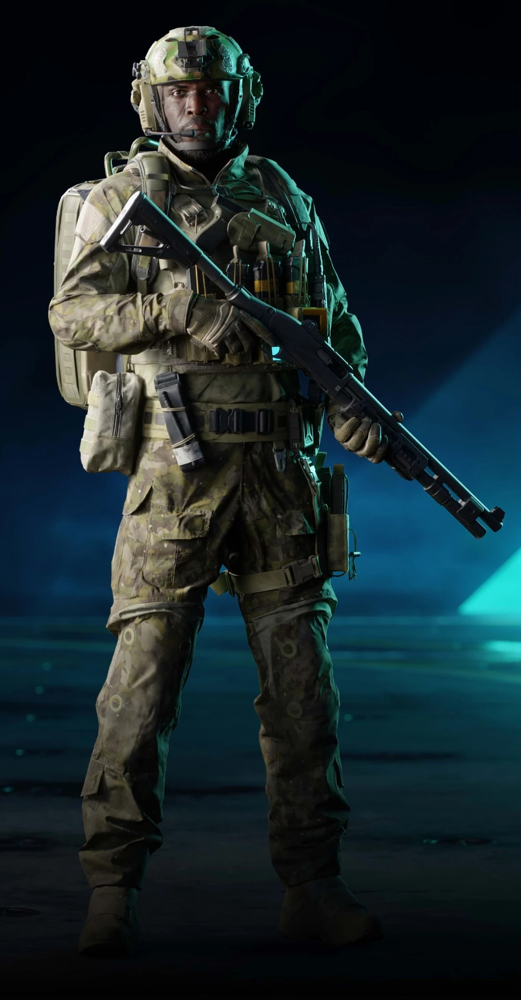
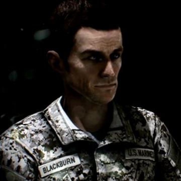

Main Characters

Irish
Captain Kimble "Irish" Graves, former Marine Staff Sergeant, and captain of the No-Pat destroyer MFS-04 Exodus. Irish leads with resilience and determination, making him a key player in the post-war world.

Henry BlackBurn
Staff Sergeant Henry "Black" Blackburn is a character in Battlefield 3's singleplayer campaign. He is a playable character and the main protagonist of the story. Although Blackburn does not physically appear in Battlefield 2042, he is mentioned throughout the lore of the Dark Creations season here, and again in the Dark Protocol event that can be heard in the briefing. Blackburn also serves as the US announcer in Battlefield Portal.